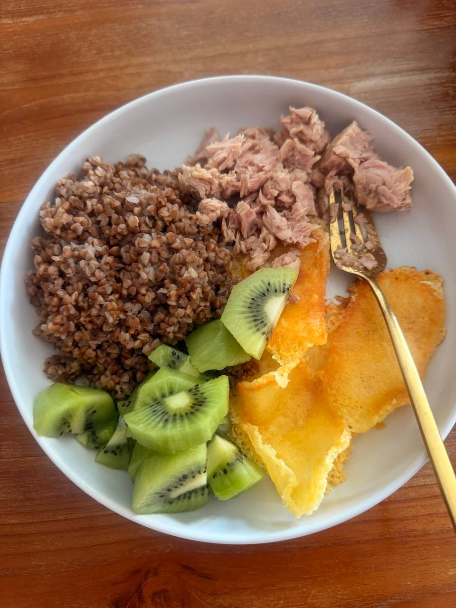

Содержит фермент актинидин, который помогает расщеплять белок и улучшает моторику кишечника. Комок пищи проходит легче: меньше тяжести после еды, быстрее перистальтика и пищеварение в целом.
При рационе с тяжёлым белком (мясо, птица) или большой массе тела — до 2–3 шт в день, лучше вместе с белковой едой.